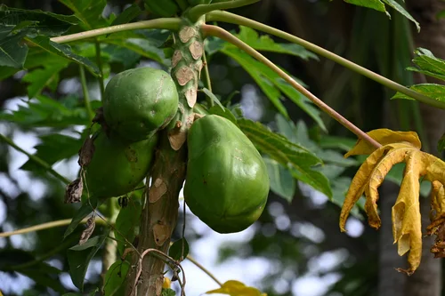

A few older leaves turning yellow
Only a few of the oldest leaves yellow slowly, and the new leaves stay green. Many leaves yellowing together belong with the widespread-yellowing guide page.

What to look for
Mark yellowing leaves and note whether they are all among the oldest leaves.
Follow one branch from its tip inward. Photograph the oldest yellow leaf beside the youngest fully open leaf; note whether the change is confined to the shaded interior.
Possible causes and next steps
If only a few old leaves yellow while shoots grow well, monitor them. Check roots and watering if young leaves follow.
How to tell similar problems apart
An occasional lower leaf that gradually turns yellow while the tip keeps growing can fit normal turnover. A whole flush turning yellow together deserves a closer look at the root zone.
Compare the pace of yellowing with the pace of leaf production. One pale lower leaf below several healthy replacements may simply be at the end of its life. A bare lower stem developing quickly, especially with stalled tips, calls for checking light and root moisture.
What to do now
Leave yellowing leaves attached long enough to see the pattern. Note whether the first affected leaves appeared after moving the pot or changing its watering routine; remove fallen leaves from the pot surface.
If low leaves are hidden by a dense canopy, compare them with equally old leaves on a better-lit branch before changing the feeding routine. Check the next leaf up the shoot for firmness and color before removing the lowest leaves.
What to check next
Check the next pair of fully expanded leaves. If these also lose colour, or only one branch yellows from tip to base, record that change separately from the loss of isolated old leaves.
Check which leaves the plant is replacing
In a rosette plant, compare the outermost ring of leaves with the center. One old outer leaf fading while the center produces firm green leaves is often part of turnover. If the center also pales or loosens, inspect the crown and roots rather than treating it as routine aging.